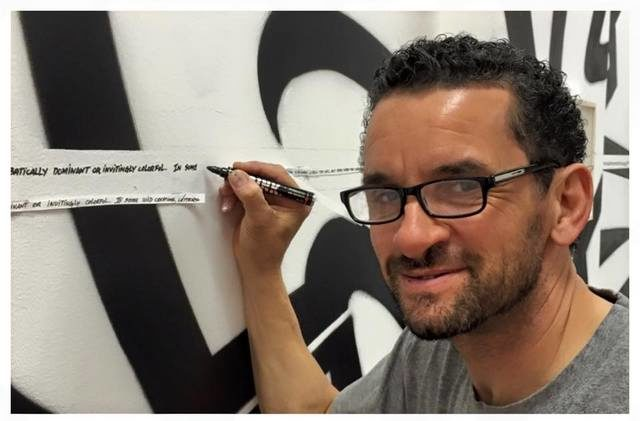

Graffiti je v obecném smyslu druh výtvarného projevu pracující ve veřejném prostoru technikou nanášení barev, často ve formě spreje nebo fixy, případně škrábání, leptání. Vychází z původního řeckého slovesa grafein - psát. Graffiti se stalo jedním z původních pilířů kultury Hip hopu, označované za kulturu protestu. Graffiti lze bez zřetele na Hip hop vnímat jako městský folklór ulice. V pozdější době je obohaceno o další techniky vyjadřování a stává se streetartem, případně mural artem.
Historie
V kontextu pravěku lze považovat za výtvarnou práci ve veřejném prostoru jeskynní malby. V dějinách starověku je graffiti přítomno v Římském impériu (zachovaly dodnes např. v Pompejích) a Egyptě zpravidla jako anonymní škrábání do omítek v podobě nadávek, vyznání lásky nebo reklamy na nevěstinec.
Na fasádách objektů byly uplatňovány techniky sgrafita jako proškrabávání do různobarevných vrstev povrchové úpravy zdiva nebo fresky, kdy jsou barvy nanášeny na vícevrstvou čerstvou vlhkou omítku.
Spontánní rytí do dřeva a škrábání do omítky se objevuje na našem území ve středověku a zachovalo se na hradech nebo historických vojenských objektech a jejich studiem se zabývá epigrafika. Dnešní graffiti však žije z odkazu novodobé historie v USA.
Subkultura
Subkultura vzniká v podvědomé opozici vůči establishmentu (rodiče, škola, stát), do jejichž mechanismů jako mladí nemají přístup ani kontrolu, jsou pouze jejich předmětem. V subkultuře mohou tvořit vlastní pravidla, mají přiměřený vliv na dění. Mužský archetyp lovce vede boj s tvrdou džunglí symbolizovaný systémem města (metra) ve veřejném prostoru, kde sice nezískají skutečnou moc, ale stávají se výstavou jejich dosažených vítězství. Kultura protestu se tedy projevuje až v moderní společnosti jako prostředek sociální integrace a adaptace.
Autoři přirozeně vytváří skupiny (slangově crew), pod jejímž jménem pracují a budují její váženost, získávají její ochranu a saturují tak svou osobnostní potřebu příslušnosti. Skupiny hrají významnou roli jak při technické realizaci děl, tak sociální roli, kde mají význam jako nejužšího kruhu autora a plní mýtus o bratrství, rodině. Skupiny mezi sebou vždy soutěží, někdy však i spolupracují nebo přímo vedou boj. Je-li přizván do skupiny začátečník, zastává při tvorbě díla podružné role (např. hlídá, dokumentuje) a na oplátku mu starší mohou předat zkušenosti.
Techniky
spreje (can) s různými typy trysek (cap) a širokou barevnou škálou
fixy a zvýrazňovače (marker, squeezer)
rytí a leptání do skla
akrylové barvy nanášené štětcem
latexové barvy s válečkem a teleskopickou tyčí využívaná na velkorozměrová díla, jednobarevná pozadí
gumoasfaltové barvy
šablona (stencil) v kombinaci se sprejem; využívá se jedné nebo více šablon pro barevné složky jednoho obrazu vyráběné ručně nebo řezané plotrem.
Legendy
Cope 2
Fernando Carlo (známý jako Cope2) je graffiti umělec ze čtvrti Kingsbridge. Maluje od roku 1978 a za svou práci získal mezinárodní uznání. Ač světoznámý, ve světě graffiti zůstával nepovšimnut až do půlky devadesátých let. On a jeho klan „Kings Destroy“ (dříve „Kids Destroy“) jsou ústředním bodem filmu o graffiti Kings Destroy. Cope2 byl jeden z hlavních cílů newyorského Vandal Squad a byl uvězněn za vandalismus, obchodování s drogami a držení drog (heroinu, marihuany, LSD a cracku).
Uvěznění následovalo vydání dvousetsedmdesáti stránkové knihy Cope2: True Legend. Cope2 začal s graffiti na konci sedmdesátých let, jeho bratranec Chico 80 zasvětil Copeho do kreslení a začlenění do „graffiti rodiny“.
Magazín Time nabídl Copemu 20 000 $ za nakreslení billboardové reklamy ve čtvrti SoHo v New Yorku na Manhattanu, v Houstonu a Woosteru. Reklama zobrazuje magazín pokrytý graffiti tagy s nápisem: „Post-Modernism? Neo-Expressionism? Just Vandalism? Time. Know why „).
Cope2 navrhl pár tenisek pro Converse pod řadou Chuck Taylor All-Stars. Jeho throw-up se nedávno objevil na zdi ve filmu Shrek 3. Cope2 je jeden z nejznámějších lidí, co používají tzv. „wildstyle“ a je taky znám pro svoje bublinová písmena, přestože je vlastně navrhl známý umělec Cap.
Lee

George Lee Quiñones (známý jako Lee) je graffiti umělec z Puerta Rica, ale spolu s rodiči se přestěhoval do New Yorku, kde se stal slavným. Začal kreslit grafitti když mu bylo teprve 5 let. Slavým se stal díky vynalezení „Subway graffiti stylu" (sprejování na vlaky) a to již ve svých 14 letech. V roce 1976, kdy mu bylo 16 se stal legendou Newyorských writerů, to už měl na svém kontě nasprejovaných více než 150 aut, vlaků, meter po celeém New Yorku. V roce 1978 začal také malovat různé citáty na jeho graffiti. Jeho nejslavnější citát je: "Graffiti is art and if art is a crime, please God, forgive me"
V tomto roce si taky založil svou vlastní crew The Fabulous 5, kde sdílel své zkušenosti nováčkům, ze kterých se později staly také velké osobnosti jako Dirty Slug, Mono, Doc109 a Slave, který jako jediný vydržel s Leem, než odešel do takzvaného „Graffiti důchodu“. Poté co skončil s pouliční malbou se Lee vydal na dráhu umění konkrétně malování na plátno. Dnes je Lee stanoveným umělcem. Nedávno uspořádal výstavu svůch děl a všechny jeho díla odkoupil legendární kytarista Eric Clapton. Také opatřil peníze pro ty, kteří byli zasažení hurikánem Katrina tím, že jel na kole z New Yorku na Floridu. Také dělá přednášky na univerzitách v USA a dokonce i v Evropě
Seen
Richard Mirando (známý jako Seen) je graffiti umělec z Bronxu v New Yorku. Je to jeden z nejznámějších graffiti umělců na světě. Díky tomu si vysloužil přezdívku „the Godfather of Graffiti“ (kmotr graffiti). Seen začal kreslit v Newyorských metrách od roku 1973. V té době mu bylo teprve 12 let a společně s jeho bratrem (přezdívaný Mad) založili crew United Artists a okamžitě se zařadili mezi jednu z největších crew v celém New Yorku díky jejich výrazných mnohobarevných graffitů na vlacích a dokonce i autech. V roce 1980 si otevřel tetovací salón Tattoo Seen, kde taky uplatnil své zkušenosti s kreslením graffiti.
Stejně tak, jako Lee začal i Seen malovat na plátna. Jeho malby si oblíbily muzea, galerie a také soukromí sběratelé po celém světě. Společně s dalšími velkými jmény cestoval po Evropě a uspořádaval výstavy, jak individuální tak i společné. Svou kariéru jako pouliční umělec musel ukončit v roce 1989, kvůli neustálým výhrůžkám ze strany policie. V roce 2009 si otevřel galerii Seen Gallery v Paříži. Jeho malby můžeme vidět ve hrách jako The Warriors, Marc Eckō's Getting Up: Contents Under Pressure a Grant Theft Auto V.


{kind=link}
{kind=link}
{kind=link}
{kind=link}
{kind=link}
{kind=link}
{kind=link}
{kind=link}
{kind=link}
{kind=link}
{kind=link}